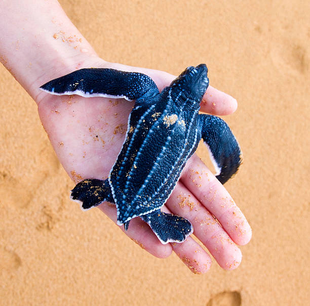

About Leatherback Sea Turtles
Leatherback sea turtles are the largest of all sea turtle species. They are known for their unique soft leathery shells, which distinguish them from other turtles with hard shells. Leatherbacks are found in all oceans, and they undertake some of the longest migrations of any marine reptile, traveling thousands of miles each year.
Habitat
Leatherback sea turtles can be found in both tropical and temperate waters. They inhabit a wide range of oceanic environments, including deep seas, coral reefs, and coastal areas. Leatherbacks are known for their ability to tolerate colder water compared to other sea turtle species.
Conservation
Leatherback sea turtles face numerous threats, including habitat degradation, pollution, entanglement in fishing gear, and egg poaching. Conservation efforts focus on protecting nesting beaches, implementing sustainable fishing practices, and reducing pollution to ensure the survival of these magnificent creatures for future generations.